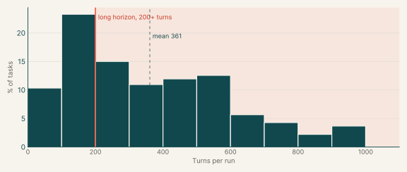

Coding OTS RL Envs
1,305
Tasks
3
Models with graded runs
7,999
Graded runs
Our coding RL environments, grouped into eight catalogs, with the pass rates of every model that has run them. All numbers come from one snapshot of Horizon runs (2026-11-02), at the task versions selected on the 2 Nov sheet.
| ProgramBench | 434 | Rebuild or upgrade programs so they behave exactly like a reference version. | 33.3% | 434 | 476 |
| System design | 85 | Keep multi-process services correct through crashes, retries and races. | 6.5% | 85 | 480 |
| Diagnosis, Debugging, and Bug Fixing | 324 | Find and fix faults in real codebases from symptoms or documentation. | 24.8% | 324 | 423 |
| Feature implementation | 117 | Add capabilities to existing libraries and services without breaking current behaviour. | 9.0% | 117 | 344 |
| Infrastructure as code | 301 | Restructure live Terraform, CDK and Pulumi code without touching deployed resources. | 23.1% | 301 | 115 |
| Data engineering | 17 | Repair pipelines and data libraries after an upstream format or schema change. | 1.3% | 17 | 173 |
| Migration | 18 | Port Java and Rust libraries to Go or C++ with identical behaviour. | 1.4% | 18 | 364 |
| Optimization | 9 | Make existing code faster or leaner without changing what it does. | 0.7% | 9 | 273 |
| Total | 1,305 | 100% | 1,305 |
Model pass rates
Each cell is a model's pass rate in one catalog: passed runs over graded runs, pooled across the tasks it ran there. A cell is blank when the model has graded runs on fewer than five tasks in that catalog.
Figure
Pass rate by model and catalog

| z-ai/glm-5.3-flash | 788 | 4,166 | 42% |
| google/gemini-3.8-flash | 561 | 3,546 | 2% |
| google/gemini-4-argon | 119 | 287 | 60% |
Samples
Each sample is a full task, downloadable from its task id. The pass rate is that of the model with the most graded runs on the task.
Turn counts
A task's turn count is the average over its completed runs, from every model. Across all catalogs the average is 361 turns, and 66% of tasks average 200 turns or more.
Figure
Turns per task, all catalogs
